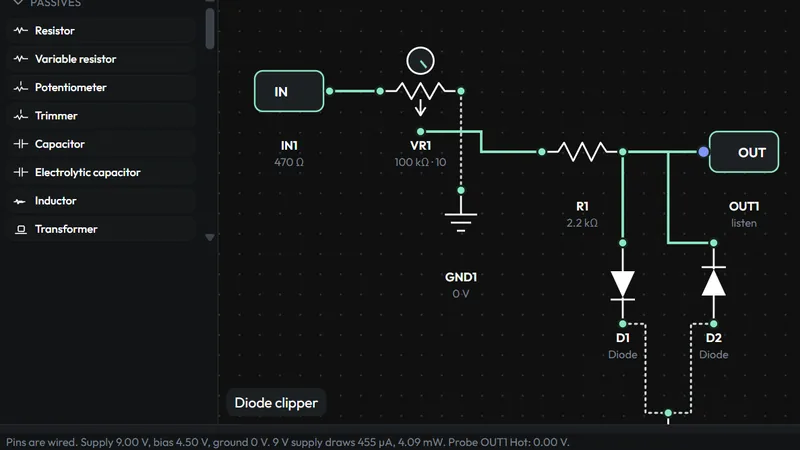
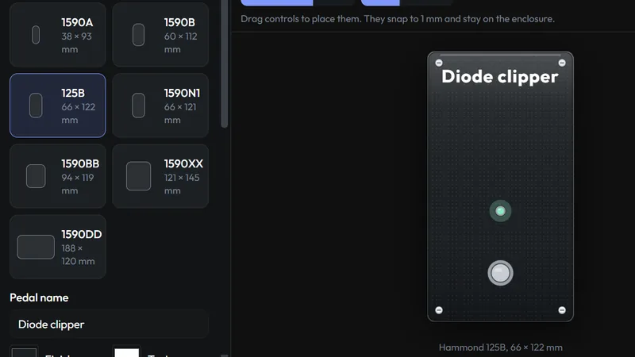

CymaVolt
Cameron S Humphries
CymaVolt is a bench for guitar-pedal circuits by Cameron S Humphries. Place the parts, wire them to the input and the output, and hear the circuit while you change the values.


What it can do
The sound is the circuit. Change a resistance, a capacitance, or a diode, and what you hear changes with it.
- Start a new project, open a saved one, or open a demo such as Low-pass, Diode clipper, Overdrive, Fuzz, Delay, or Tremolo.
- Place resistors, capacitors, diodes, and potentiometers. Drag to move them. Rotate turns a part in quarter turns.
- Tap a pin, then another pin, to wire them. Open pins are hollow rings. Wire the circuit to an input, an output, and ground.
- Select a part to edit its value. Drag the knob on a potentiometer, or use its slider.
- Play listens to the output. Bypass switches between that and the dry input.
- Waveforms and a frequency view follow what you hear.
- The source can be a note, an instrument, this device, or a file. Line and Instrument change how hard the input drives the circuit.
- Block select gathers parts. Save that wired section as a block in this browser, then drop it back onto the canvas.
- Save and load keep the design in this browser. The file is a .pmk.
- The designer places knobs, switches, jacks, and an LED on a Hammond enclosure.
- Export packages that pedal as a VST3.
On this device
There is no account and no sign-in. Projects stay in this browser until you save a file or export a plugin. CymaVolt does not show ads.
FAQ
What is CymaVolt?
CymaVolt is a guitar pedal circuit designer by Cameron S Humphries. You place parts, wire them, and hear the circuit while you change it.
What can CymaVolt do?
You place resistors, capacitors, diodes, and potentiometers, and wire them to an input, an output, and ground. Play listens to the circuit. Bypass switches back to the dry input. Waveforms and a frequency view follow what you hear. The source can be a note, an instrument, a device, or a file. A design can be saved in this browser, and a wired section can be saved as a block. The designer places knobs, switches, jacks, and an LED on a Hammond enclosure. Export packages the pedal as a VST3.
Does CymaVolt need an account?
No. There is no sign-in. Designs stay in this browser.
Where do the pedals go?
They stay in this browser. You can also save a .pmk file, or export a VST3. The circuit is not uploaded.
Where can I download CymaVolt?
CymaVolt is not on the Microsoft Store. It runs in the browser.
How much does CymaVolt cost?
CymaVolt is not for sale yet. It is not on the Microsoft Store.
Support